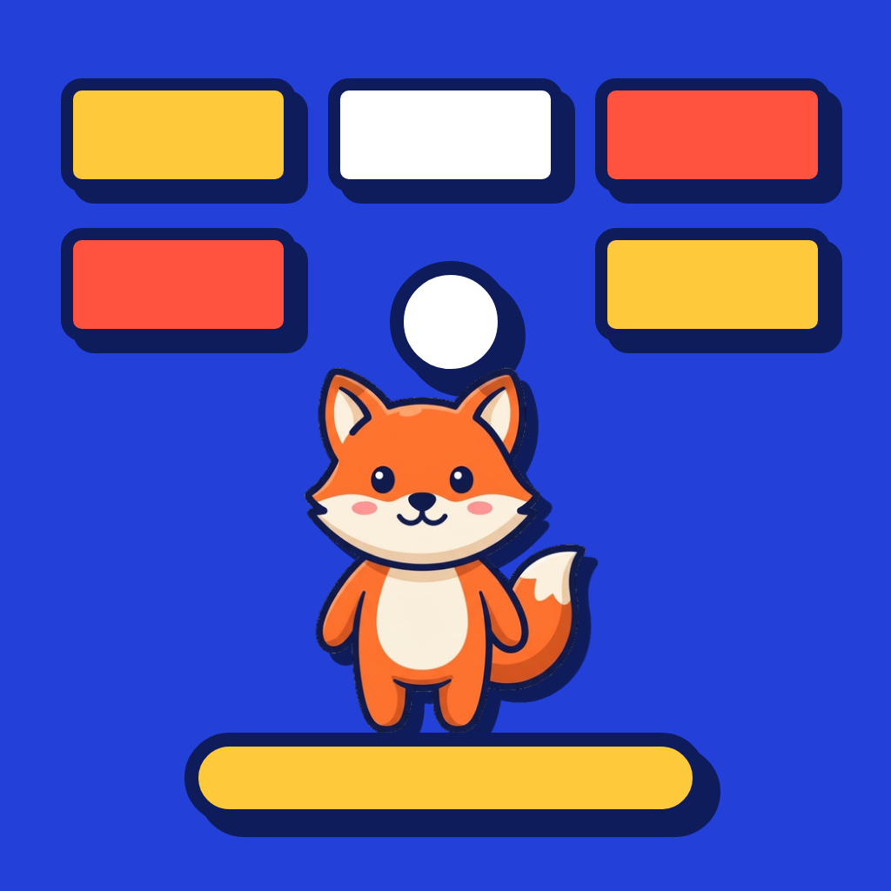
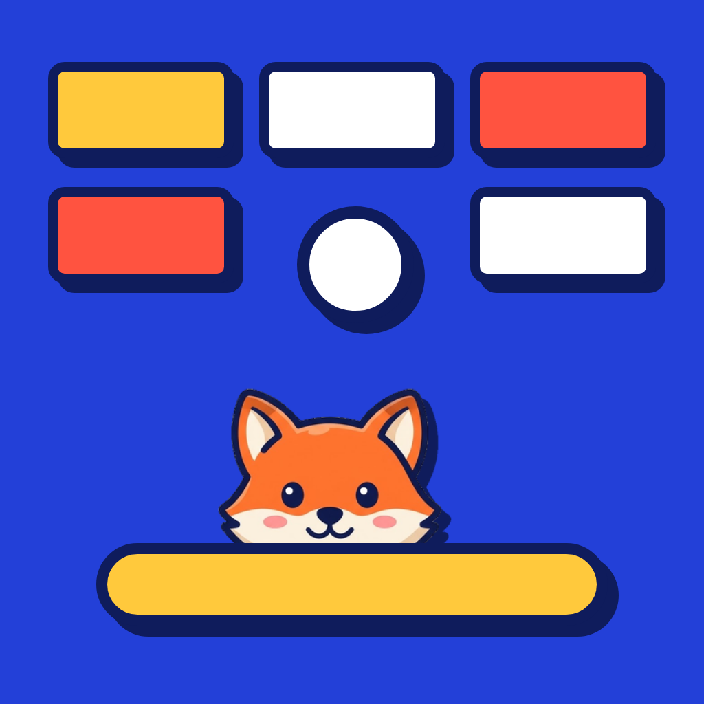
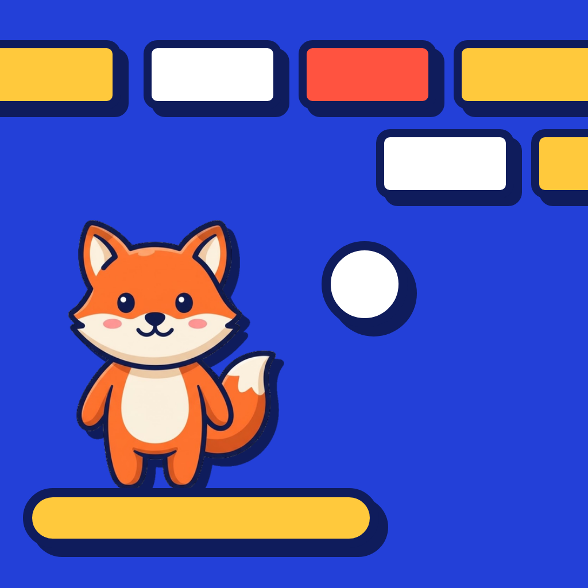
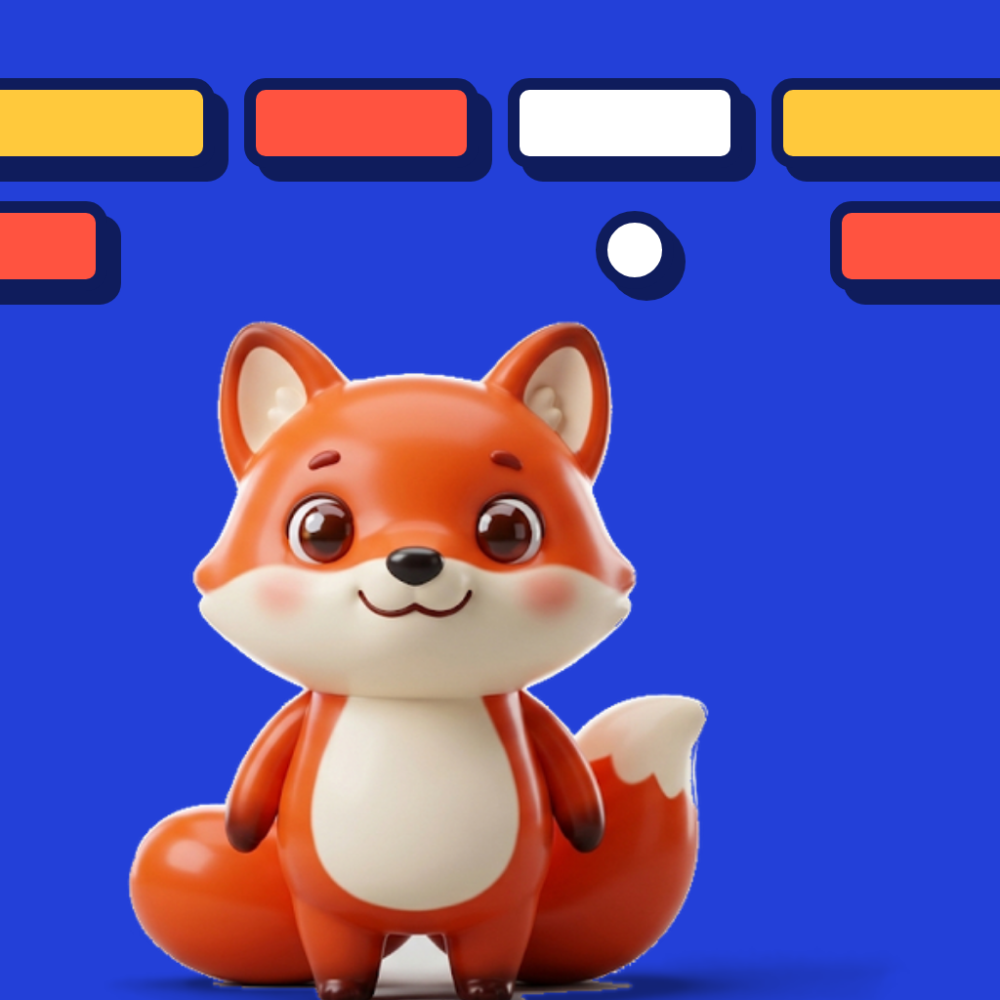
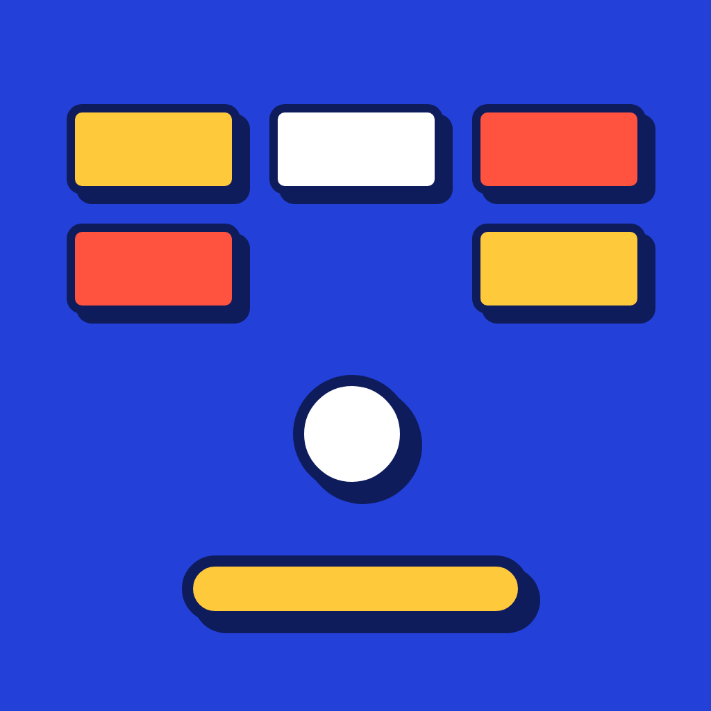
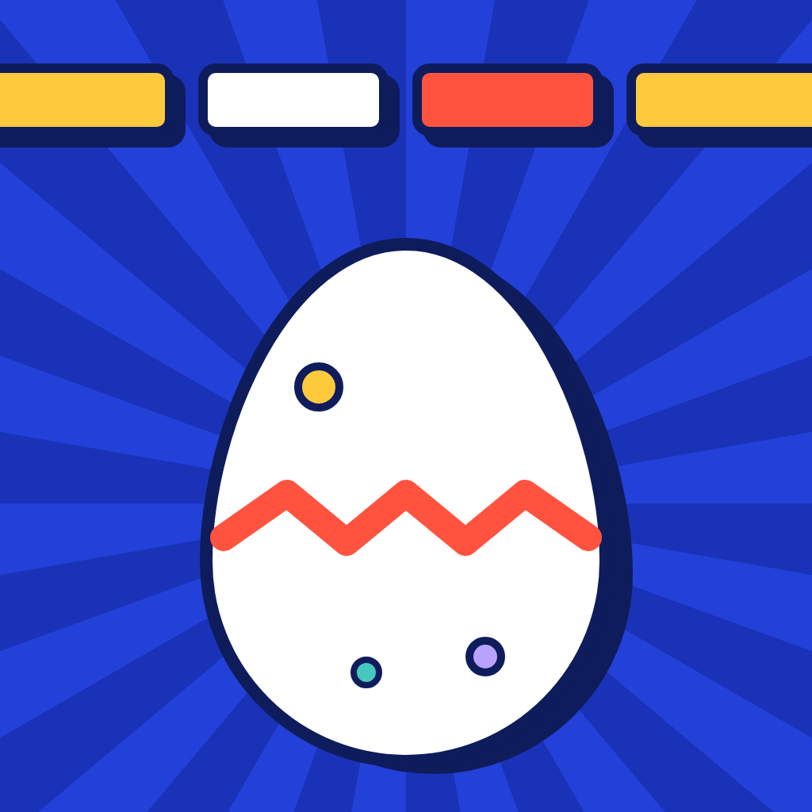

Bounce Pets: app icon options
Fox and brick band, with the new flat fox. The breakout pieces are drawn as big as the old option B so the game reads at a glance. 1024×1024, no transparency, square corners (iOS rounds them). Shown with the iOS mask and at home-screen sizes.

1. Fox on the paddle
The fox stands on the paddle under two rows of bricks and the ball.
2. Fox peeking
The fox peeks over the paddle. Bricks and ball are the biggest of the three.
3. Diagonal
Fox and paddle at the lower left, the ball flying to the bricks at the upper right.
Earlier options (3D fox, before the art change)


